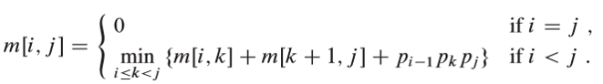

<!DOCTYPE html>
<html>
<head><meta name="generator" content="Hexo 3.8.0">

    <!--[if lt IE 9]>
        <style>body {display: none; background: none !important} </style>
        <meta http-equiv="Refresh" Content="0; url=//outdatedbrowser.com/" />
    <![endif]-->

<meta charset="utf-8">
<meta http-equiv="X-UA-Compatible" content="IE=edge, chrome=1">
<meta name="viewport" content="width=device-width, initial-scale=1, maximum-scale=1, user-scalable=no">
<meta name="format-detection" content="telephone=no">
<meta name="author" content="Shao Ze wei">


<meta name="description" content="整理大三上的算法导论。">
<meta name="keywords" content="复习整理">
<meta property="og:type" content="article">
<meta property="og:title" content="算法复习">
<meta property="og:url" content="http://yoursite.com/2018/12/11/算法复习/index.html">
<meta property="og:site_name" content="Life is what you make it">
<meta property="og:description" content="整理大三上的算法导论。">
<meta property="og:locale" content="default">
<meta property="og:image" content="http://yoursite.com/2018/12/11/算法复习/15-1.png">
<meta property="og:image" content="http://yoursite.com/2018/12/11/算法复习/15-2.png">
<meta property="og:image" content="http://yoursite.com/2018/12/11/算法复习/15-3.png">
<meta property="og:image" content="http://yoursite.com/2018/12/11/算法复习/15-4.png">
<meta property="og:image" content="http://yoursite.com/2018/12/11/算法复习/15-5.png">
<meta property="og:image" content="http://yoursite.com/2018/12/11/算法复习/15-6.png">
<meta property="og:updated_time" content="2018-12-11T12:43:40.624Z">
<meta name="twitter:card" content="summary">
<meta name="twitter:title" content="算法复习">
<meta name="twitter:description" content="整理大三上的算法导论。">
<meta name="twitter:image" content="http://yoursite.com/2018/12/11/算法复习/15-1.png">

<link rel="apple-touch-icon" href="/apple-touch-icon.png">


    <link rel="alternate" href="/atom.xml" title="Life is what you make it" type="application/atom+xml">


    <link rel="shortcut icon" href="/favicon.png">


    <link href="//cdn.bootcss.com/animate.css/3.5.1/animate.min.css" rel="stylesheet">


    <link href="//cdn.bootcss.com/fancybox/2.1.5/jquery.fancybox.min.css" rel="stylesheet">


    <script src="//cdn.bootcss.com/pace/1.0.2/pace.min.js"></script>
    <link href="//cdn.bootcss.com/pace/1.0.2/themes/blue/pace-theme-minimal.css" rel="stylesheet">


<link rel="stylesheet" href="/css/style.css">


<link href="//cdn.bootcss.com/font-awesome/4.6.3/css/font-awesome.min.css" rel="stylesheet">


<title>算法复习 | Life is what you make it</title>

<script src="//cdn.bootcss.com/jquery/2.2.4/jquery.min.js"></script>
<script src="//cdn.bootcss.com/clipboard.js/1.5.10/clipboard.min.js"></script>

<script>
    var yiliaConfig = {
        fancybox: true,
        animate: true,
        isHome: false,
        isPost: true,
        isArchive: false,
        isTag: false,
        isCategory: false,
        fancybox_js: "//cdn.bootcss.com/fancybox/2.1.5/jquery.fancybox.min.js",
        scrollreveal: "//cdn.bootcss.com/scrollReveal.js/3.1.4/scrollreveal.min.js",
        search: true
    }
</script>


    <script>
        yiliaConfig.jquery_ui = [true, "//cdn.bootcss.com/jqueryui/1.10.4/jquery-ui.min.js", "//cdn.bootcss.com/jqueryui/1.10.4/css/jquery-ui.min.css"];
    </script>


    <script> yiliaConfig.rootUrl = "\/";</script>


</head></html>
<body>
  <div id="container">
    <div class="left-col">
    <div class="overlay"></div>
<div class="intrude-less">
    <header id="header" class="inner">
        <a href="/" class="profilepic">
            
        </a>
        <hgroup>
          <h1 class="header-author"><a href="/">Shao Ze wei</a></h1>
        </hgroup>

        

        
            <form id="search-form">
            <input type="text" id="local-search-input" name="q" placeholder="search..." class="search form-control" autocomplete="off" autocorrect="off" searchonload="">
            <i class="fa fa-times" onclick="resetSearch()"></i>
            </form>
            <div id="local-search-result"></div>
            <p class="no-result">No results found <i class="fa fa-spinner fa-pulse"></i></p>
        


        
            <div id="switch-btn" class="switch-btn">
                <div class="icon">
                    <div class="icon-ctn">
                        <div class="icon-wrap icon-house" data-idx="0">
                            <div class="birdhouse"></div>
                            <div class="birdhouse_holes"></div>
                        </div>
                        <div class="icon-wrap icon-ribbon hide" data-idx="1">
                            <div class="ribbon"></div>
                        </div>
                        
                        <div class="icon-wrap icon-link hide" data-idx="2">
                            <div class="loopback_l"></div>
                            <div class="loopback_r"></div>
                        </div>
                        
                        
                        <div class="icon-wrap icon-me hide" data-idx="3">
                            <div class="user"></div>
                            <div class="shoulder"></div>
                        </div>
                        
                    </div>
                    
                </div>
                <div class="tips-box hide">
                    <div class="tips-arrow"></div>
                    <ul class="tips-inner">
                        <li>菜单</li>
                        <li>标签</li>
                        
                        <li>友情链接</li>
                        
                        
                        <li>关于我</li>
                        
                    </ul>
                </div>
            </div>
        

        <div id="switch-area" class="switch-area">
            <div class="switch-wrap">
                <section class="switch-part switch-part1">
                    <nav class="header-menu">
                        <ul>
                        
                            <li><a href="/">主页</a></li>
                        
                            <li><a href="/archives/">所有文章</a></li>
                        
                            <li><a href="/tags/">标签云</a></li>
                        
                            <li><a href="/about/">关于我</a></li>
                        
                        </ul>
                    </nav>
                    <nav class="header-nav">
                        <ul class="social">
                            
                                <a class="fa Email" href="/1005204767@qq.com" title="Email"></a>
                            
                                <a class="fa GitHub" href="https://github.com/loveshrimp" title="GitHub"></a>
                            
                                <a class="fa RSS" href="/atom.xml" title="RSS"></a>
                            
                        </ul>
                    </nav>
                </section>
                
                
                <section class="switch-part switch-part2">
                    <div class="widget tagcloud" id="js-tagcloud">
                        <ul class="tag-list"><li class="tag-list-item"><a class="tag-list-link" href="/tags/BFS/">BFS</a></li><li class="tag-list-item"><a class="tag-list-link" href="/tags/C-函数/">C++函数</a></li><li class="tag-list-item"><a class="tag-list-link" href="/tags/C-语法/">C++语法</a></li><li class="tag-list-item"><a class="tag-list-link" href="/tags/WinSocket/">WinSocket</a></li><li class="tag-list-item"><a class="tag-list-link" href="/tags/fork/">fork</a></li><li class="tag-list-item"><a class="tag-list-link" href="/tags/matplot/">matplot</a></li><li class="tag-list-item"><a class="tag-list-link" href="/tags/numpy/">numpy</a></li><li class="tag-list-item"><a class="tag-list-link" href="/tags/web-server/">web_server</a></li><li class="tag-list-item"><a class="tag-list-link" href="/tags/分布式系统介绍/">分布式系统介绍</a></li><li class="tag-list-item"><a class="tag-list-link" href="/tags/动态规划/">动态规划</a></li><li class="tag-list-item"><a class="tag-list-link" href="/tags/复习整理/">复习整理</a></li><li class="tag-list-item"><a class="tag-list-link" href="/tags/多线程/">多线程</a></li><li class="tag-list-item"><a class="tag-list-link" href="/tags/字符串/">字符串</a></li><li class="tag-list-item"><a class="tag-list-link" href="/tags/字符串匹配/">字符串匹配</a></li><li class="tag-list-item"><a class="tag-list-link" href="/tags/排序/">排序</a></li><li class="tag-list-item"><a class="tag-list-link" href="/tags/操作系统实验/">操作系统实验</a></li><li class="tag-list-item"><a class="tag-list-link" href="/tags/正则表达式/">正则表达式</a></li><li class="tag-list-item"><a class="tag-list-link" href="/tags/积累/">积累</a></li><li class="tag-list-item"><a class="tag-list-link" href="/tags/网络通信/">网络通信</a></li><li class="tag-list-item"><a class="tag-list-link" href="/tags/英语/">英语</a></li><li class="tag-list-item"><a class="tag-list-link" href="/tags/进程/">进程</a></li><li class="tag-list-item"><a class="tag-list-link" href="/tags/进行中/">进行中</a></li><li class="tag-list-item"><a class="tag-list-link" href="/tags/阅读/">阅读</a></li></ul>
                    </div>
                </section>
                
                
                
                <section class="switch-part switch-part3">
                    <div id="js-friends">
                    
                      <a class="main-nav-link switch-friends-link" href="https://hexo.io">Hexo</a>
                    
                      <a class="main-nav-link switch-friends-link" href="https://pages.github.com/">GitHub</a>
                    
                    </div>
                </section>
                

                
                
                <section class="switch-part switch-part4">
                
                    <div id="js-aboutme">菜鸡一个</div>
                </section>
                
            </div>
        </div>
    </header>                
</div>
    </div>
    <div class="mid-col">
      <nav id="mobile-nav">
      <div class="overlay">
          <div class="slider-trigger"></div>
          <h1 class="header-author js-mobile-header hide"><a href="/" title="回到主页">Shao Ze wei</a></h1>
      </div>
    <div class="intrude-less">
        <header id="header" class="inner">
            <a href="/" class="profilepic">
                
            </a>
            <hgroup>
              <h1 class="header-author"><a href="/" title="回到主页">Shao Ze wei</a></h1>
            </hgroup>
            
            <nav class="header-menu">
                <ul>
                
                    <li><a href="/">主页</a></li>
                
                    <li><a href="/archives/">所有文章</a></li>
                
                    <li><a href="/tags/">标签云</a></li>
                
                    <li><a href="/about/">关于我</a></li>
                
                <div class="clearfix"></div>
                </ul>
            </nav>
            <nav class="header-nav">
                        <ul class="social">
                            
                                <a class="fa Email" target="_blank" href="/1005204767@qq.com" title="Email"></a>
                            
                                <a class="fa GitHub" target="_blank" href="https://github.com/loveshrimp" title="GitHub"></a>
                            
                                <a class="fa RSS" target="_blank" href="/atom.xml" title="RSS"></a>
                            
                        </ul>
            </nav>
        </header>                
    </div>
    <link class="menu-list" tags="标签" friends="友情链接" about="关于我">
</nav>
      <div class="body-wrap"><article id="post-算法复习" class="article article-type-post" itemscope="" itemprop="blogPost">
  
    <div class="article-meta">
      <a href="/2018/12/11/算法复习/" class="article-date">
      <time datetime="2018-12-11T12:06:05.000Z" itemprop="datePublished">2018-12-11</time>
</a>


    </div>
  
  <div class="article-inner">
    
      <input type="hidden" class="isFancy">
    
    
      <header class="article-header">
        
  
    <h1 class="article-title" itemprop="name">
      算法复习
    </h1>
  

      </header>
      
      <div class="article-info article-info-post">
        
    <div class="article-category tagcloud">
    <a class="article-category-link" href="/categories/算法/">算法</a>
    </div>


        
    <div class="article-tag tagcloud">
        <ul class="article-tag-list"><li class="article-tag-list-item"><a class="article-tag-list-link" href="/tags/复习整理/">复习整理</a></li></ul>
    </div>

        <div class="clearfix"></div>
      </div>
      
    
    <div class="article-entry" itemprop="articleBody">
      
          
        <p>整理大三上的算法导论。<br><a id="more"></a></p>
<h1 id="chapter9-动态规划"><a href="#chapter9-动态规划" class="headerlink" title="chapter9-动态规划"></a>chapter9-动态规划</h1><h2 id="解决什么样的问题？"><a href="#解决什么样的问题？" class="headerlink" title="解决什么样的问题？"></a>解决什么样的问题？</h2><p>动态规划(Dynamic Programming)与分治法都是通过组合子问题的解来求解原问题。常常用来解决最优解问题。<br><strong>分治法</strong>：互不相交的子问题，递归地求解子问题。如果<strong>子问题有重叠</strong>，则递归求解中就会反复地求解这些公共子问题，造成算法效率的下降。 </p>
<p><strong>动态规划</strong>：有子问题重叠的情况，即不同的子问题具有公共的子子问题。动态规划算法对每个这样的子子问题只求解一次，将其<strong>解保存在一个表格中</strong>，再次碰到时，无需重新计算，只从表中找到上次计算的结果加以引用即可。</p>
<h2 id="动态规划的一般步骤"><a href="#动态规划的一般步骤" class="headerlink" title="动态规划的一般步骤"></a>动态规划的一般步骤</h2><ol>
<li>刻画一个最优解的结构特征；</li>
<li>递归地定义最优解的值；</li>
<li>计算最优解的值；</li>
<li>利用计算出的信息，构造一个最优解。</li>
</ol>
<p>步骤4常常根据实际情况而定，为了构造最优解的值，常常需要在前三步的基础上保存一些额外的信息。</p>
<p><strong>最优子结构</strong>：<br>如果问题的最优解所包含的子问题的解也是最优的，我们就称该问题具有最优子结构性质。可以用反证法（剪切粘贴法）来证明问题的最优子结构性。</p>
<h2 id="动态规划的两种常用方法"><a href="#动态规划的两种常用方法" class="headerlink" title="动态规划的两种常用方法"></a>动态规划的两种常用方法</h2><ul>
<li>自顶向下的备忘录法</li>
<li>自底向上（常用）<br>一纲条切割为例(问题描述见下文)<figure class="highlight c++"><table><tr><td class="gutter"><pre><span class="line">1</span><br><span class="line">2</span><br><span class="line">3</span><br><span class="line">4</span><br><span class="line">5</span><br><span class="line">6</span><br><span class="line">7</span><br><span class="line">8</span><br><span class="line">9</span><br><span class="line">10</span><br><span class="line">11</span><br><span class="line">12</span><br><span class="line">13</span><br><span class="line">14</span><br><span class="line">15</span><br><span class="line">16</span><br><span class="line">17</span><br><span class="line">18</span><br><span class="line">19</span><br><span class="line">20</span><br><span class="line">21</span><br><span class="line">22</span><br><span class="line">23</span><br><span class="line">24</span><br><span class="line">25</span><br><span class="line">26</span><br><span class="line">27</span><br><span class="line">28</span><br><span class="line">29</span><br><span class="line">30</span><br><span class="line">31</span><br><span class="line">32</span><br><span class="line">33</span><br><span class="line">34</span><br><span class="line">35</span><br><span class="line">36</span><br><span class="line">37</span><br><span class="line">38</span><br><span class="line">39</span><br><span class="line">40</span><br><span class="line">41</span><br><span class="line">42</span><br><span class="line">43</span><br><span class="line">44</span><br><span class="line">45</span><br><span class="line">46</span><br><span class="line">47</span><br><span class="line">48</span><br><span class="line">49</span><br></pre></td><td class="code"><pre><span class="line"><span class="comment">//自顶向下备忘录法</span></span><br><span class="line"><span class="function"><span class="keyword">int</span> <span class="title">maxvalue</span><span class="params">(<span class="keyword">int</span> cur_length, <span class="keyword">int</span> left)</span></span></span><br><span class="line"><span class="function"></span>&#123;</span><br><span class="line">    <span class="keyword">int</span> value1 = <span class="number">0</span>;</span><br><span class="line">    <span class="keyword">if</span> (a[left] || left == <span class="number">0</span>)</span><br><span class="line">    &#123;</span><br><span class="line">        value1 = a[left];</span><br><span class="line">    &#125;</span><br><span class="line">    <span class="keyword">else</span></span><br><span class="line">    &#123;</span><br><span class="line">        value1 = maxvalue(<span class="number">1</span>, left - <span class="number">1</span>);</span><br><span class="line">        a[left] = value1;</span><br><span class="line">    &#125;</span><br><span class="line">    <span class="keyword">int</span> temp = value[cur_length] + value1;</span><br><span class="line">    <span class="keyword">if</span> (left == <span class="number">0</span>)</span><br><span class="line">    &#123;</span><br><span class="line">        <span class="keyword">return</span> temp;</span><br><span class="line">    &#125;</span><br><span class="line">    <span class="keyword">else</span></span><br><span class="line">    &#123;</span><br><span class="line">        <span class="keyword">int</span> cur_temp = maxvalue(cur_length + <span class="number">1</span>, left - <span class="number">1</span>);</span><br><span class="line">        <span class="keyword">if</span> (temp &gt; cur_temp)</span><br><span class="line">        &#123;</span><br><span class="line">            <span class="keyword">return</span> temp;</span><br><span class="line">        &#125;</span><br><span class="line">        <span class="keyword">else</span></span><br><span class="line">        &#123;</span><br><span class="line">            <span class="keyword">return</span> cur_temp;</span><br><span class="line">        &#125;</span><br><span class="line">    &#125;</span><br><span class="line">&#125;</span><br><span class="line"><span class="comment">//自底向上法</span></span><br><span class="line"><span class="function"><span class="keyword">int</span> <span class="title">maxvalue</span><span class="params">(<span class="keyword">int</span> length)</span></span></span><br><span class="line"><span class="function"></span>&#123;</span><br><span class="line">    <span class="keyword">for</span> (<span class="keyword">int</span> i = <span class="number">1</span>; i &lt; length; i++)</span><br><span class="line">    &#123;</span><br><span class="line">        <span class="keyword">int</span> p = <span class="number">0</span>, temp = <span class="number">0</span>;</span><br><span class="line">        <span class="keyword">for</span> (<span class="keyword">int</span> j = <span class="number">1</span>; j &lt;= i; j++)</span><br><span class="line">        &#123;</span><br><span class="line">            temp = value[j] + a[i];</span><br><span class="line">            <span class="keyword">if</span> (p &lt; temp)</span><br><span class="line">            &#123;</span><br><span class="line">                p = temp;</span><br><span class="line">                root[i] = j;<span class="comment">//每次记忆当前取的长度</span></span><br><span class="line">            &#125;</span><br><span class="line">        &#125;</span><br><span class="line">        a[i] = p;</span><br><span class="line">    &#125;</span><br><span class="line">&#125;</span><br></pre></td></tr></table></figure>
</li>
</ul>
<h2 id="动态规划例子"><a href="#动态规划例子" class="headerlink" title="动态规划例子"></a>动态规划例子</h2><h3 id="15-1钢条切割"><a href="#15-1钢条切割" class="headerlink" title="15.1钢条切割"></a>15.1钢条切割</h3><h4 id="问题描述"><a href="#问题描述" class="headerlink" title="问题描述"></a>问题描述</h4><p><br></p>
<h4 id="问题划分"><a href="#问题划分" class="headerlink" title="问题划分"></a>问题划分</h4><p>对于长度为n（n≥1）的钢条，设rn是最优切割的收益<br>对最优切割，若其<strong>首次切割</strong>在位置i，钢条被分成长度为i和n-i的两段，有：<br>$r_n= r_i+ r_{n-i}$<br>一般情况，任意切割点j都将钢条分为两段，长度分别为j和n-j，1≤j≤n。令$r_j$和$r_{n-j}$分别是<strong>这两段的最优切割收益</strong>，则该切割可获得的最好收益是：$r_n= r_j+ r_{n-j}$<br>所以有：<br></p>
<h4 id="解的构建"><a href="#解的构建" class="headerlink" title="解的构建"></a>解的构建</h4><p>用一个数组s用于记录对规模为j的钢条切割出的第一段钢条的长度s[j]。</p>
<h3 id="15-2矩阵链乘法"><a href="#15-2矩阵链乘法" class="headerlink" title="15.2矩阵链乘法"></a>15.2矩阵链乘法</h3><h4 id="问题描述-1"><a href="#问题描述-1" class="headerlink" title="问题描述"></a>问题描述</h4><p>给定n个矩阵的链&lt;A1,A2,…,An&gt;，其中i=1,2,…,n，矩阵Ai的维数为pi-1×pi。求一个完全“括号化方案”，使得计算乘积A1A2…An所需的标量乘法次数最小。</p>
<h4 id="问题划分-1"><a href="#问题划分-1" class="headerlink" title="问题划分"></a>问题划分</h4><p></p>
<h4 id="解的构建-1"><a href="#解的构建-1" class="headerlink" title="解的构建"></a>解的构建</h4><p>由m表和s表构建<br>S[i,j]记录了AiAi+1…Aj的最优括号化方案的<strong>最后一个</strong>分割点k</p>
<h3 id="15-3最大公共子序列"><a href="#15-3最大公共子序列" class="headerlink" title="15.3最大公共子序列"></a>15.3最大公共子序列</h3><h4 id="问题描述-2"><a href="#问题描述-2" class="headerlink" title="问题描述"></a>问题描述</h4><p>子序列，公共子序列，最长公共子序列的描述自查。</p>
<h4 id="问题划分-2"><a href="#问题划分-2" class="headerlink" title="问题划分"></a>问题划分</h4><p>设有序列X=&lt;$x_1,x_2,…,x_m$&gt;和$$Y=&lt;y_1,y_2,…,y_n&gt;$，并<br>设序列Z=&lt;$z_1,z_2,…,z_k$&gt;为X和Y的任意一个LCS。<br>  （1）若$x_m=y_n$，则$zk=xm=yn$，且$Zk-1$是$Xm-1$和$Yn-1$的一个LCS。<br>  （2）若xm≠yn，则zk≠xm蕴含Z是Xm-1和Y的一个LCS。<br>  （3）若xm≠yn，则zk≠yn蕴含Z是X和Yn-1的一个LCS。<br></p>
<h4 id="解的构建-2"><a href="#解的构建-2" class="headerlink" title="解的构建"></a>解的构建</h4><p>利用类似下图的表进行构建<br></p>
<h3 id="15-5最优二叉搜索树搜索树"><a href="#15-5最优二叉搜索树搜索树" class="headerlink" title="15.5最优二叉搜索树搜索树"></a>15.5最优二叉搜索树搜索树</h3><h4 id="问题描述-3"><a href="#问题描述-3" class="headerlink" title="问题描述"></a>问题描述</h4><h4 id="问题划分-3"><a href="#问题划分-3" class="headerlink" title="问题划分"></a>问题划分</h4><h4 id="解的构建-3"><a href="#解的构建-3" class="headerlink" title="解的构建"></a>解的构建</h4>
      
    </div>
    
  </div>
  
    


    <nav id="article-nav">
        
            <div id="article-nav-newer" class="article-nav-title">
                <a href="/2019/05/13/python相关库/">
                    python数学处理相关库
                </a>
            </div>
        
        
            <div id="article-nav-older" class="article-nav-title">
                <a href="/2018/12/11/进程控制实验/">
                    进程控制实验
                </a>
            </div>
        
    </nav>

  
</article>

    <div id="toc" class="toc-article">
        <strong class="toc-title">文章目录</strong>
        
            <ol class="toc"><li class="toc-item toc-level-1"><a class="toc-link" href="#chapter9-动态规划"><span class="toc-number">1.</span> <span class="toc-text">chapter9-动态规划</span></a><ol class="toc-child"><li class="toc-item toc-level-2"><a class="toc-link" href="#解决什么样的问题？"><span class="toc-number">1.1.</span> <span class="toc-text">解决什么样的问题？</span></a></li><li class="toc-item toc-level-2"><a class="toc-link" href="#动态规划的一般步骤"><span class="toc-number">1.2.</span> <span class="toc-text">动态规划的一般步骤</span></a></li><li class="toc-item toc-level-2"><a class="toc-link" href="#动态规划的两种常用方法"><span class="toc-number">1.3.</span> <span class="toc-text">动态规划的两种常用方法</span></a></li><li class="toc-item toc-level-2"><a class="toc-link" href="#动态规划例子"><span class="toc-number">1.4.</span> <span class="toc-text">动态规划例子</span></a><ol class="toc-child"><li class="toc-item toc-level-3"><a class="toc-link" href="#15-1钢条切割"><span class="toc-number">1.4.1.</span> <span class="toc-text">15.1钢条切割</span></a><ol class="toc-child"><li class="toc-item toc-level-4"><a class="toc-link" href="#问题描述"><span class="toc-number">1.4.1.1.</span> <span class="toc-text">问题描述</span></a></li><li class="toc-item toc-level-4"><a class="toc-link" href="#问题划分"><span class="toc-number">1.4.1.2.</span> <span class="toc-text">问题划分</span></a></li><li class="toc-item toc-level-4"><a class="toc-link" href="#解的构建"><span class="toc-number">1.4.1.3.</span> <span class="toc-text">解的构建</span></a></li></ol></li><li class="toc-item toc-level-3"><a class="toc-link" href="#15-2矩阵链乘法"><span class="toc-number">1.4.2.</span> <span class="toc-text">15.2矩阵链乘法</span></a><ol class="toc-child"><li class="toc-item toc-level-4"><a class="toc-link" href="#问题描述-1"><span class="toc-number">1.4.2.1.</span> <span class="toc-text">问题描述</span></a></li><li class="toc-item toc-level-4"><a class="toc-link" href="#问题划分-1"><span class="toc-number">1.4.2.2.</span> <span class="toc-text">问题划分</span></a></li><li class="toc-item toc-level-4"><a class="toc-link" href="#解的构建-1"><span class="toc-number">1.4.2.3.</span> <span class="toc-text">解的构建</span></a></li></ol></li><li class="toc-item toc-level-3"><a class="toc-link" href="#15-3最大公共子序列"><span class="toc-number">1.4.3.</span> <span class="toc-text">15.3最大公共子序列</span></a><ol class="toc-child"><li class="toc-item toc-level-4"><a class="toc-link" href="#问题描述-2"><span class="toc-number">1.4.3.1.</span> <span class="toc-text">问题描述</span></a></li><li class="toc-item toc-level-4"><a class="toc-link" href="#问题划分-2"><span class="toc-number">1.4.3.2.</span> <span class="toc-text">问题划分</span></a></li><li class="toc-item toc-level-4"><a class="toc-link" href="#解的构建-2"><span class="toc-number">1.4.3.3.</span> <span class="toc-text">解的构建</span></a></li></ol></li><li class="toc-item toc-level-3"><a class="toc-link" href="#15-5最优二叉搜索树搜索树"><span class="toc-number">1.4.4.</span> <span class="toc-text">15.5最优二叉搜索树搜索树</span></a><ol class="toc-child"><li class="toc-item toc-level-4"><a class="toc-link" href="#问题描述-3"><span class="toc-number">1.4.4.1.</span> <span class="toc-text">问题描述</span></a></li><li class="toc-item toc-level-4"><a class="toc-link" href="#问题划分-3"><span class="toc-number">1.4.4.2.</span> <span class="toc-text">问题划分</span></a></li><li class="toc-item toc-level-4"><a class="toc-link" href="#解的构建-3"><span class="toc-number">1.4.4.3.</span> <span class="toc-text">解的构建</span></a></li></ol></li></ol></li></ol></li></ol>
        
    </div>
    <style>
        .left-col .switch-btn,
        .left-col .switch-area {
            display: none;
        }
        .toc-level-3 i,
        .toc-level-3 ol {
            display: none !important;
        }
    </style>

    <input type="button" id="tocButton" value="隐藏目录" title="点击按钮隐藏或者显示文章目录">

    <script>
        yiliaConfig.toc = ["隐藏目录", "显示目录", !!"false"];
    </script>


    
<div class="share">
    
        <div class="bdsharebuttonbox">
            <a href="#" class="fa fa-twitter bds_twi" data-cmd="twi" title="分享到推特"></a>
            <a href="#" class="fa fa-weibo bds_tsina" data-cmd="tsina" title="分享到新浪微博"></a>
            <a href="#" class="fa fa-qq bds_sqq" data-cmd="sqq" title="分享给 QQ 好友"></a>
            <a href="#" class="fa fa-files-o bds_copy" data-cmd="copy" title="复制网址"></a>
            <a href="#" class="fa fa fa-envelope-o bds_mail" data-cmd="mail" title="通过邮件分享"></a>
            <a href="#" class="fa fa-weixin bds_weixin" data-cmd="weixin" title="生成文章二维码"></a>
            <a href="#" class="fa fa-share-alt bds_more" data-cmd="more"></a>
        </div>
        <script>
            window._bd_share_config={
                "common":{"bdSnsKey":{},"bdText":"算法复习　| Life is what you make it　","bdMini":"2","bdMiniList":false,"bdPic":"","bdStyle":"0","bdSize":"24"},"share":{}};with(document)0[(getElementsByTagName('head')[0]||body).appendChild(createElement('script')).src='http://bdimg.share.baidu.com/static/api/js/share.js?v=89860593.js?cdnversion='+~(-new Date()/36e5)];
        </script>
    

    
</div>


    


    <div class="scroll" id="post-nav-button">
        
            <a href="/2019/05/13/python相关库/" title="上一篇: python数学处理相关库">
                <i class="fa fa-angle-left"></i>
            </a>
        

        <a title="文章列表"><i class="fa fa-bars"></i><i class="fa fa-times"></i></a>

        
            <a href="/2018/12/11/进程控制实验/" title="下一篇: 进程控制实验">
                <i class="fa fa-angle-right"></i>
            </a>
        
    </div>

    <ul class="post-list"><li class="post-list-item"><a class="post-list-link" href="/2099/09/09/ENmovies/">英语积累</a></li><li class="post-list-item"><a class="post-list-link" href="/2019/05/13/python相关库/">python数学处理相关库</a></li><li class="post-list-item"><a class="post-list-link" href="/2018/12/11/算法复习/">算法复习</a></li><li class="post-list-item"><a class="post-list-link" href="/2018/12/11/进程控制实验/">进程控制实验</a></li><li class="post-list-item"><a class="post-list-link" href="/2018/12/07/分布式系统/">分布式系统</a></li><li class="post-list-item"><a class="post-list-link" href="/2018/12/01/算法4：最小时间差/">算法4：最小时间差(leetcode-539)</a></li><li class="post-list-item"><a class="post-list-link" href="/2018/11/29/C-STL部分整理/">C++STL部分整理</a></li><li class="post-list-item"><a class="post-list-link" href="/2018/11/25/Web-server/">WinSocket编程实现web_server</a></li><li class="post-list-item"><a class="post-list-link" href="/2018/11/24/算法3：买卖股票的最佳时机/">算法3：买卖股票的最佳时机</a></li><li class="post-list-item"><a class="post-list-link" href="/2018/11/24/算法2：扫雷小游戏/">算法2：扫雷小游戏（leetcode-529）</a></li><li class="post-list-item"><a class="post-list-link" href="/2018/11/22/算法1：验证IP/">算法1：验证IP（leetcode-468）</a></li></ul>


    <script>
        
    </script>
</div>
      <footer id="footer">
    <div class="outer">
        <div id="footer-info">
            <div class="footer-left">
                <i class="fa fa-copyright"></i> 
                2018-2019 Shao Ze wei
            </div>
            <div class="footer-right">
                <a href="http://hexo.io/" target="_blank" title="快速、简洁且高效的博客框架">Hexo</a>  Theme <a href="https://github.com/MOxFIVE/hexo-theme-yelee" target="_blank" title="简而不减 Hexo 双栏博客主题  v3.5">Yelee</a> by MOxFIVE <i class="fa fa-heart animated infinite pulse"></i>
            </div>
        </div>
        
            <div class="visit">
                
                    <span id="busuanzi_container_site_pv" style="display:none">
                        <span id="site-visit" title="本站到访数"><i class="fa fa-user" aria-hidden="true"></i><span id="busuanzi_value_site_uv"></span>
                        </span>
                    </span>
                
                
                    <span>| </span>
                
                
                    <span id="busuanzi_container_page_pv" style="display:none">
                        <span id="page-visit" title="本页阅读量"><i class="fa fa-eye animated infinite pulse" aria-hidden="true"></i><span id="busuanzi_value_page_pv"></span>
                        </span>
                    </span>
                
            </div>
        
    </div>
</footer>
    </div>
    
<script data-main="/js/main.js" src="//cdn.bootcss.com/require.js/2.2.0/require.min.js"></script>

    <script>
        $(document).ready(function() {
            var iPad = window.navigator.userAgent.indexOf('iPad');
            if (iPad > -1 || $(".left-col").css("display") === "none") {
                var bgColorList = ["#9db3f4", "#414141", "#e5a859", "#f5dfc6", "#c084a0", "#847e72", "#cd8390", "#996731"];
                var bgColor = Math.ceil(Math.random() * (bgColorList.length - 1));
                $("body").css({"background-color": bgColorList[bgColor], "background-size": "cover"});
            }
            else {
                var backgroundnum = 5;
                var backgroundimg = "url(/background/bg-x.jpg)".replace(/x/gi, Math.ceil(Math.random() * backgroundnum));
                $("body").css({"background": backgroundimg, "background-attachment": "fixed", "background-size": "cover"});
            }
        })
    </script>


    <script type="text/x-mathjax-config">
MathJax.Hub.Config({
    tex2jax: {
        inlineMath: [ ['$','$'], ["\\(","\\)"]  ],
        processEscapes: true,
        skipTags: ['script', 'noscript', 'style', 'textarea', 'pre', 'code']
    }
});

MathJax.Hub.Queue(function() {
    var all = MathJax.Hub.getAllJax(), i;
    for(i=0; i < all.length; i += 1) {
        all[i].SourceElement().parentNode.className += ' has-jax';                 
    }       
});
</script>

<script src="//cdn.bootcss.com/mathjax/2.6.1/MathJax.js?config=TeX-AMS-MML_HTMLorMML">
</script>


<div class="scroll" id="scroll">
    <a href="#" title="返回顶部"><i class="fa fa-arrow-up"></i></a>
    <a href="#comments" onclick="load$hide();" title="查看评论"><i class="fa fa-comments-o"></i></a>
    <a href="#footer" title="转到底部"><i class="fa fa-arrow-down"></i></a>
</div>
<script>
    // Open in New Window
    
        var oOpenInNew = {
            
            
            
            
            
            
             archives: ".archive-article-title", 
             miniArchives: "a.post-list-link", 
            
             friends: "#js-friends a", 
             socail: ".social a" 
        }
        for (var x in oOpenInNew) {
            $(oOpenInNew[x]).attr("target", "_blank");
        }
    
</script>

<script async src="https://dn-lbstatics.qbox.me/busuanzi/2.3/busuanzi.pure.mini.js">
</script>
  </div>
</body>
</html>